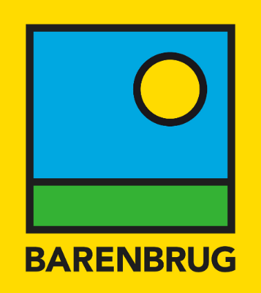

Education
🎓 Doctor of Philosophy, Molecular Genetics from La Trobe University, 2014
🎓 Bachelor of Agricultural Science, Rural Technology from the University of Queensland, 2010
About Me
I am a Genomic Breeding Scientist and Strategic Science Manager at Barenbrug where I lead the development and implementation of commercial genomic breeding and associated ‘omic’ technologies.
Interest and Skills
My expertise lies predominantly in the realm of 🧬 Genomics, with a specialised focus on Genomic Selection and Genomic Breeding, particularly in the context of plants 🌱. Proficient in bioinformatics 👨💻 , I am driven by a deep passion for the programming language.
My skill set extends to crafting robust cloud computing ☁️ environments tailored for both research and production pipelines. I take pleasure in orchestrating these systems with the precision of the Nextflow 🔂 workflow manager, and proudly serve as a Nextflow Ambassador. Through my technical endeavours, I am dedicated to advancing genomic research and breeding practices for a sustainable future.
Experience
 Genomic Breeding Scientist | Global Strategic Science Manager
Barenbrug | August 2021 - Current
~
Senior Research Scientist
Agriculture Victoria Research | April 2017 - August 2021
~
Research Scientist
Agriculture Victoria Research | October 2014 - March 2017
~
Research Assistant
Victorian Department of Primary Industries | June 2009 - December 2009